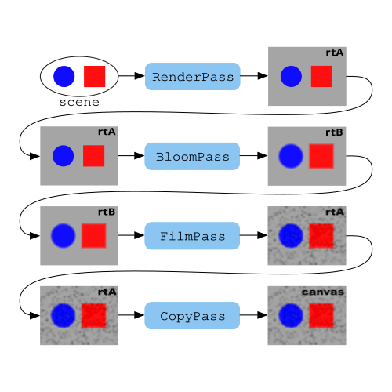

后期处理通常是指对二维图像应用某种效果或滤镜。在 THREE.js 的情况下，我们有一个包含许多网格的场景。我们将该场景渲染成二维图像。通常情况下，该图像会直接渲染到画布上并在浏览器中显示，但我们可以将其渲染到渲染目标，然后在绘制到画布之前对结果应用一些后期处理效果。之所以称为后期处理，是因为它发生在主场景处理之后（post）。
后期处理的例子有类似 Instagram 的滤镜、Photoshop 滤镜等。
THREE.js 有一些示例类可以帮助设置后期处理管线。它的工作方式是你创建一个 EffectComposer，然后向其中添加多个 Pass 对象。然后你调用 EffectComposer.render，它会将你的场景渲染到 render target，并随后应用每个 Pass。
每个 Pass 可以是一些后期处理效果，比如添加暗角、模糊、应用泛光、加上胶片颗粒、调整色相、饱和度、对比度等……最后将结果渲染到画布上。
了解 EffectComposer 的功能有点重要。它会创建两个 渲染目标。我们称它们为 rtA 和 rtB。
然后，你调用 EffectComposer.addPass 按照你想应用的顺序添加每个通道。通道随后会以 类似这样的方式应用。

首先，你传入 RenderPass 的场景被渲染到 rtA，然后 rtA 被传递到下一个通道，无论它是什么。那个通道使用 rtA 作为输入来执行它要做的操作，并将结果写入 rtB。然后 rtB 被传递到下一个通道，该通道使用 rtB 作为输入并写回 rtA。这一过程在所有通道中继续。
每个 Pass 有 4 个基本选项
enabled是否使用此通道
needsSwap完成此通道后是否交换 rtA 和 rtB
clear渲染此通道之前是否清除
renderToScreen是否渲染到画布而不是当前目标渲染目标。在大多数用例中，您不需要显式设置此标志，因为通道链中的最后一次通道会自动渲染到屏幕。
让我们组合一个基本示例。我们将从 响应性文章 中的示例开始。
首先，我们创建一个 EffectComposer。
const composer = new EffectComposer(renderer);
然后作为第一次处理，我们添加一个 RenderPass，它会使用我们的相机将场景渲染到第一个渲染目标中。
composer.addPass(new RenderPass(scene, camera));
接下来我们添加一个 BloomPass。一个 BloomPass 会将其输入渲染到通常较小的渲染目标中并对结果进行模糊处理。然后它将模糊后的结果叠加到原始输入上。这会使场景产生辉光
const bloomPass = new BloomPass(
1, // strength
25, // kernel size
4, // sigma ?
256, // blur render target resolution
);
composer.addPass(bloomPass);
接下来我们添加一个 FilmPass，它会在其输入上绘制噪点和扫描线。
const filmPass = new FilmPass(
0.5, // intensity
false, // grayscale
);
composer.addPass(filmPass);
最后我们添加一个 OutputPass，它执行颜色空间转换为 sRGB 并可选地进行色调映射。这一步通常是处理链的最后一步。
const outputPass = new OutputPass(); composer.addPass(outputPass);
要使用这些类，我们需要导入一堆脚本。
import {EffectComposer} from 'three/addons/postprocessing/EffectComposer.js';
import {RenderPass} from 'three/addons/postprocessing/RenderPass.js';
import {BloomPass} from 'three/addons/postprocessing/BloomPass.js';
import {FilmPass} from 'three/addons/postprocessing/FilmPass.js';
import {OutputPass} from 'three/addons/postprocessing/OutputPass.js';
对于几乎任何后期处理，EffectComposer.js、RenderPass.js 和 OutputPass.js 都是必需的。
我们最后需要做的是使用 EffectComposer.render 代替 WebGLRenderer.render 并且 告诉 EffectComposer 匹配画布的大小。
-function render(now) {
- time *= 0.001;
+let then = 0;
+function render(now) {
+ now *= 0.001; // convert to seconds
+ const deltaTime = now - then;
+ then = now;
if (resizeRendererToDisplaySize(renderer)) {
const canvas = renderer.domElement;
camera.aspect = canvas.clientWidth / canvas.clientHeight;
camera.updateProjectionMatrix();
+ composer.setSize(canvas.width, canvas.height);
}
cubes.forEach((cube, ndx) => {
const speed = 1 + ndx * .1;
- const rot = time * speed;
+ const rot = now * speed;
cube.rotation.x = rot;
cube.rotation.y = rot;
});
- renderer.render(scene, camera);
+ composer.render(deltaTime);
requestAnimationFrame(render);
}
EffectComposer.render 接收一个 deltaTime，它是自上一帧渲染以来的秒数。它将这个值传递给各种效果，以防其中任何一个是动画。在这种情况下，FilmPass 是动画的。
在运行时更改效果参数通常需要设置 uniform 值。让我们添加一个 GUI 来调整一些参数。要弄清楚哪些值可以轻松调整以及如何调整它们，需要深入查看该效果的代码。
查看 BloomPass.js 我发现了这一行：
this.combineUniforms[ 'strength' ].value = strength;
所以我们可以通过设置
bloomPass.combineUniforms.strength.value = someValue;
来设置强度。同样地，在查看 FilmPass.js 时，我发现了这些行：
this.uniforms.intensity.value = intensity; this.uniforms.grayscale.value = grayscale;
这就很清楚地说明了如何设置它们。
让我们快速制作一个GUI来设置这些值
import {GUI} from 'three/addons/libs/lil-gui.module.min.js';
和
const gui = new GUI();
{
const folder = gui.addFolder('BloomPass');
folder.add(bloomPass.combineUniforms.strength, 'value', 0, 2).name('strength');
folder.open();
}
{
const folder = gui.addFolder('FilmPass');
folder.add(filmPass.uniforms.grayscale, 'value').name('grayscale');
folder.add(filmPass.uniforms.intensity, 'value', 0, 1).name('intensity');
folder.open();
}
，现在我们可以调整这些设置
。这是制作我们自己效果的一个小步骤。
后处理效果使用着色器。着色器是用一种叫做GLSL（图形库着色语言）的语言编写的。全面讲解整个语言对于这些文章来说太庞大了。一些开始的资源可能是这篇文章，以及着色器之书。
我认为一个示例来帮助你入门会很有用，所以我们来做一个简单的 GLSL 后期处理着色器。我们将创建一个可以让我们将图像与颜色相乘的着色器。
对于后期处理，THREE.js 提供了一个有用的助手，叫做 ShaderPass。它接收一个对象，其中包含定义顶点着色器、片段着色器以及默认输入的信息。它会处理设置从哪个纹理读取以获取前一帧结果，以及渲染到哪里，可以是 EffectComposer 的渲染目标之一或画布。
这是一个简单的后期处理着色器，它将前一帧的结果与一个颜色相乘。
const colorShader = {
uniforms: {
tDiffuse: { value: null },
color: { value: new THREE.Color(0x88CCFF) },
},
vertexShader: `
varying vec2 vUv;
void main() {
vUv = uv;
gl_Position = projectionMatrix * modelViewMatrix * vec4(position, 1);
}
`,
fragmentShader: `
varying vec2 vUv;
uniform sampler2D tDiffuse;
uniform vec3 color;
void main() {
vec4 previousPassColor = texture2D(tDiffuse, vUv);
gl_FragColor = vec4(
previousPassColor.rgb * color,
previousPassColor.a);
}
`,
};
在 tDiffuse 之上是 ShaderPass 用来传入上一个渲染通道结果纹理的名称，所以我们几乎总是需要它。然后我们声明 color 为 THREE.js 的 Color.
接下来我们需要一个顶点着色器。对于后期处理，这里显示的顶点着色器基本上是标准的，很少需要更改。不深入太多细节（参见上面链接的文章），变量 uv、projectionMatrix、modelViewMatrix 和 position 都是由 THREE.js 神奇地添加的。
最后我们创建一个片段着色器。在它里面，我们通过这一行从上一个渲染通道获取像素颜色
vec4 previousPassColor = texture2D(tDiffuse, vUv);
我们将其乘以我们的颜色，并将结果设置为 gl_FragColor
gl_FragColor = vec4(
previousPassColor.rgb * color,
previousPassColor.a);
添加一些简单的 GUI 来设置颜色的 3 个数值
const gui = new GUI();
gui.add(colorPass.uniforms.color.value, 'r', 0, 4).name('red');
gui.add(colorPass.uniforms.color.value, 'g', 0, 4).name('green');
gui.add(colorPass.uniforms.color.value, 'b', 0, 4).name('blue');
给我们一个简单的后处理效果，将颜色相乘。
如前所述，关于如何编写 GLSL 和自定义着色器的所有细节对于这些文章来说太多了。如果你真的想了解 WebGL 本身的工作原理，可以查看 这些文章。另一个很好的资源就是 浏览 THREE.js 仓库中现有的后处理着色器。有些比其他的更复杂，但如果你从较小的着色器开始，希望你能了解它们是如何工作的。
不幸的是，THREE.js 仓库中的大多数后期处理效果没有文档，因此要使用它们，你必须查看示例或查看效果本身的代码。希望这些简单的示例以及关于渲染目标的文章提供了足够的上下文来入门。